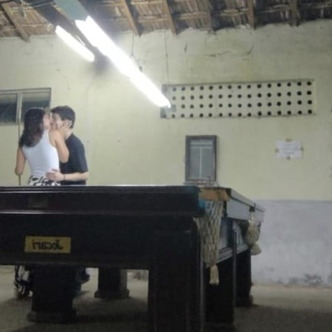
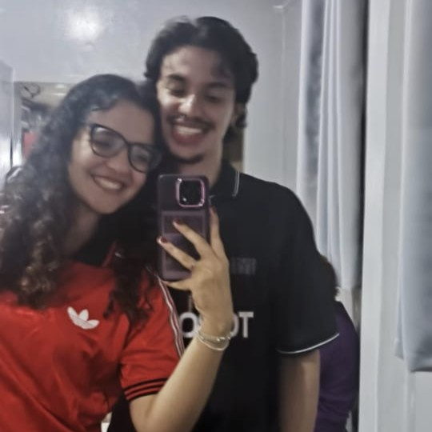

Algumas músicas que marcaram o nosso 2025
Velha Infância
Tribalistas
Uma mensagem para o meu amor:
Minha princesa,
Muito obrigado por fazer desse ano o mais incrível de todos desde a primeira hora dele.
Você é a pessoa mais especial desse mundo inteiro, e a razão da minha felicidade nesse ano, e tenho certeza que para a minha vida inteira.
O que aconteceu no ano novo há exatamente um ano atrás foi um sinal de que tudo nesse meu ano seria por você, e para você, e é impossível falar dos melhores momentos dele sem te citar, porque você foi a razão de todos eles.
Que o nosso 2026 seja ainda melhor que o nosso 2025, e é só você que eu quero pra esse ano, porque é só de você que eu preciso pra estar bem.
Minha melhor amiga é o meu amor, e eu amo ela mais do que tudo nesse mundo.
De 2025 até o final da minha vida.
Sobre o casal
Amanda e Bernardo estão juntos oficialmente há
E cada segundo desses que se passa é mais incrível que o anterior!
Eles ficaram pela primeira vez no dia 01/01/2025.
O primeiro encontro mesmo foi no dia 04/01/2025, para ver Auto da Compadecida 2 no cinema.
No dia 26/02, postaram a primeira foto dos dois, e depois disso, passaram o carnaval juntos.
No dia 12/03, Amanda foi aprovada para a UFJF, onde os dois estudam agora.
Começaram a namorar no dia 22/03.
No dia 28/03, saíram juntos em Juiz de Fora pela primeira vez
Dia 22/04 foram para Juiz de Fora para o ínicio das aulas da Amanda.
A primeira festa que foram juntos foi a Alcooltéia, no dia 17/05.
No dia 05/07, fizeram a primeira viagem juntos, para Miracema.
A primeira só dos dois mesmo foi no dia 05/09, para Niterói.
E essas foram só algumas das coisas que o casal fez, entre milhões de outras nesse tempo todo, uma mais incrível que a outra.
Conheceram restaurantes, bares, cinemas, praias, karaokês, ruas, casas, apartamentos...
E têm a certeza de que ainda tem bilhões de outros momentos para viver, lugares para visitar, experiências pra ter.
E o mais importante de tudo, sempre juntos.